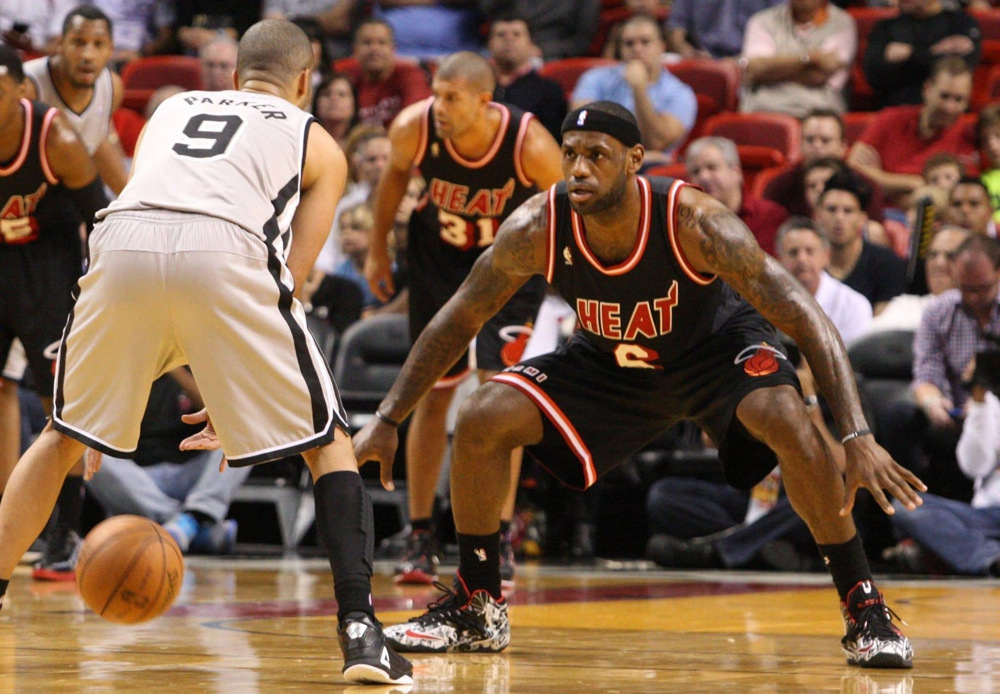
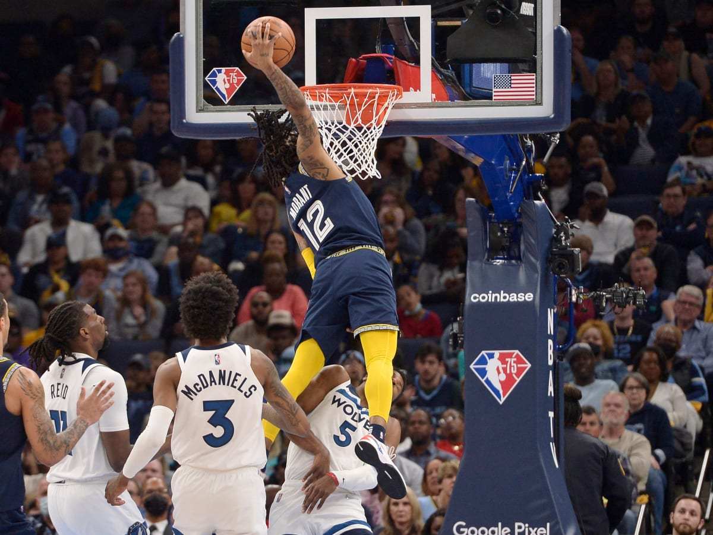

Importnat muscles in basketball
Leg muscles are essential in basketball. This is important in many aspects of basketball. Firstly, guards need a lot of leg muscle to be able to do certain movements on the court. For example, if they improve their explosiveness by strengthening their quads, calves, and hamstrings, this will help them have a quicker first step. This will make it easier for them to fly by defenders and get to the basket. Explosiveness also helps with being able to switch directions fast and getting your defender on his heel. Leg muscles are also important for being able to dunk or to get rebounds. To be able to get your hand up to the rim and dunk you need pretty strong legs to be able to push you up to the rim. Calves play a very important role here. They act as springs in your legs. When getting a rebound, you want to be able to jump up fast and high to get the ball, calves help you do just that.
Also, to play good defense, you need very strong quads and glutes. Being in defensive stance requires you to stay low and move vast while in the position. U need to be as low as being parallel to the grown. This will help you stop the defense because you are being very wide and you have a stable base. They wouldn't be able just to get past easily. They would need to get you off balance which isn’t so easy to do.

Furthermore, the upper body is also very essential in basketball. The upper body helps the basketball players to become physical and storm through the other players. The shoulder, chest, biceps, and triceps are all muscle areas that basketball players use during play. Having big and muscular shoulders helps create contact in basketball. If you are in the post with the ball, you can push people using your shoulder to create space for yourself. Furthermore, the triceps are also very important. To be able to throw fast passes and shoot deep three-pointers, you need strong triceps.
Another muscle that is used a lot but not recognized is the abdominals. Your core helps you stabelized and stand in an upright position. If another player is bumping into you, you would contract your core to keep you stabilized. You use your core also when changing directions in basketball. When you want to change directions fast in basketball, you need to be able to have your core contracted and not sloppy. Having a strong core will allow you to do so.
